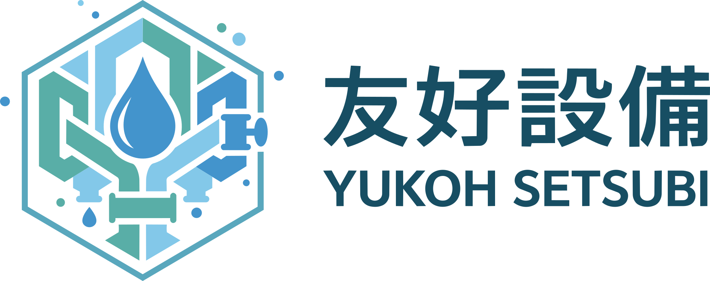
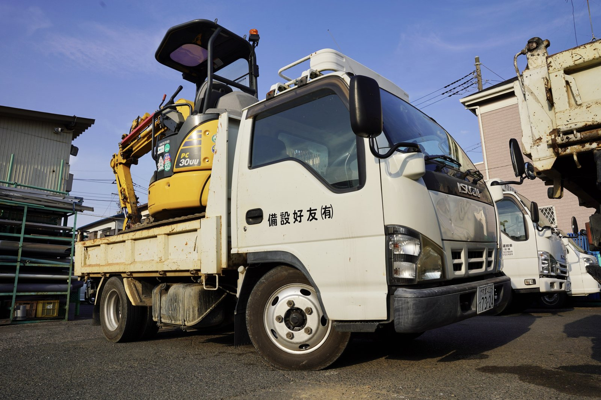
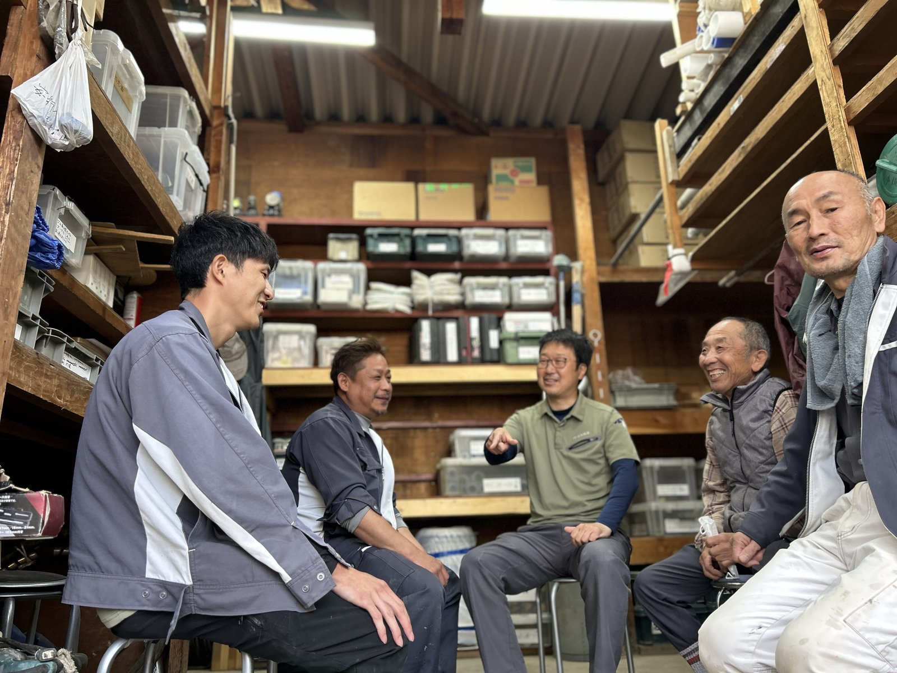
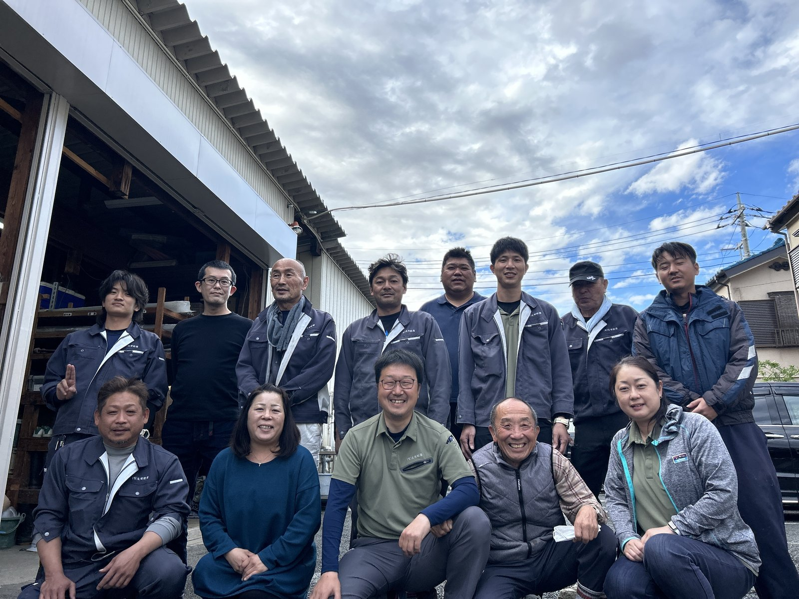

27歳 / 出戻り入社
西岡さん
戻ってきて思うのは、
とにかく「居心地が良い！」

RECRUIT採用サイト2026年度 上下水道工事スタッフ 採用エントリー受付中
川口市内 道路埋設配水管工事 受注のお知らせ
能登半島地震 給水・漏水応援対応に従事しました
About Yuko
People
実際に働く2人に、包み隠さず話してもらいました。
カードをタップすると全文が読めます。
西岡さん
戻ってきて思うのは、
とにかく「居心地が良い！」
村井さん
入社のキッカケは
「家から近かった」だけ！
Job
市役所からの水道工事が中心。資材運搬・掘削・配管埋込・漏水修繕を先輩がイチから指導します。
水道・土木経験者、下水道排水設備工事責任技術者は特に歓迎。皆勤手当・賞与年2回・昇給あり。
Welfare
受験料・講習費は全額会社負担。
8:15〜17:15で完全退社。日曜・祝日／第2・第4土曜が休み。「休んだ方が仕事の質が上がる」社長の方針。
日曜祝日の漏水対応は当番制で手当別途。能登半島地震の応援対応も実績。
10周年では社員旅行でパラオ3泊4日。今でも評判が良く継続中。
駐車場完備（資材置き場約500坪）。社用車・作業着支給。
社長の趣味の畑（資材置き場内）でなす・トマト・きゅうり・インゲン・バナナ・柑橘類・ぶどう等を栽培。社員やお得意さんに評判です(笑)
Blog
現場や社内のリアルを、社員が発信中。



FAQ
はい、大歓迎です。いま活躍している社員も未経験スタートが多く、資材運搬・掘削・配管の埋込・漏水修繕まで、先輩がイチから指導します。普通自動車免許（MT）は必須です。
問題ありません。採用で重視するのは資格の有無より「コミュニケーションが取りやすいか」です。入社後は、受験料・講習費を全額会社負担（資格取得100%支援）で、必要な資格の取得を応援します。
勤務は8:15〜17:15で、基本的に残業はありません。休日は日曜・祝日、および第2・第4土曜日です。「休んだ方が仕事の質が上がる」という社長の方針で、しっかり休める環境です。
埼玉県川口市を中心に、市役所など自治体からの上下水道工事が中心です。漏水修理・緊急対応、水道の引込工事、道路埋設管工事、学校・公共施設の水道工事などを手がけています。民間・個人のご依頼はお問い合わせください。
エントリーフォームからご応募いただくと、1〜2営業日以内に担当よりご連絡します。その後、面接を経て採用となります。まずはお気軽にご応募・お問い合わせください。
Company
Contact
採用のご応募・工事のご依頼・協力会社さまのご相談など、お気軽にどうぞ。
1〜2営業日以内に担当よりご返信します。
048-287-0666 受付 8:15–17:15 ／ 日曜・祝日定休